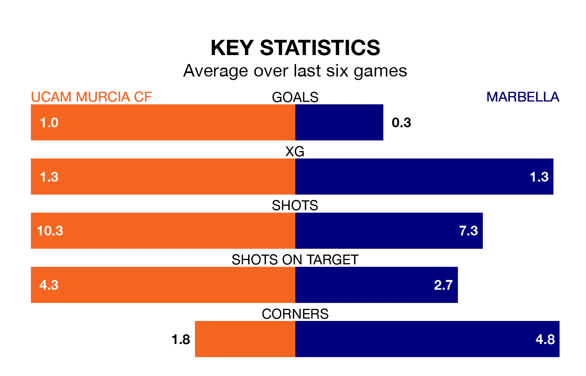

Marbella come to Estadio de La Condomina to play UCAM Murcia CF on Sunday in terrible form, having collected just one point from their last six games.
The visitors have drawn just one of their last six fixtures, while UCAM Murcia have three wins and a draw.
With 19 goals in 17 games so far this season, UCAM Murcia are scoring at the league's average rate with 1.1 goals per game. But they are conceding at an average rate too, letting in 18 goals at a rate of 1.1 per game.
Marbella are also average scorers, with 1.1 goals per game. They have conceded 0.8 goals per game.
The visitors are fifth in the table after 17 games, of which they have won eight and drawn three, earning 27 points.
The home side are four places behind Marbella in ninth, with seven wins and three draws putting them on 24 points.
In the last five years, UCAM Murcia and Marbella have played each other on four occasions. Marbella won three of them and they drew once.
On average, UCAM Murcia scored 0.5 goals and Marbella 2.5 in those matches.
Their last meeting was on September 3, when Marbella won 2-0 at home.
UCAM Murcia's last match was on January 7, a 3-1 loss against Vélez.
Marbella lost 1-0 against Águilas last time out, also on January 7.
Updated: 13:38 (UTC), 10/01/24